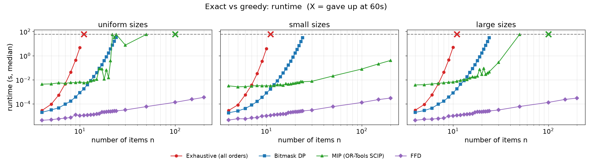
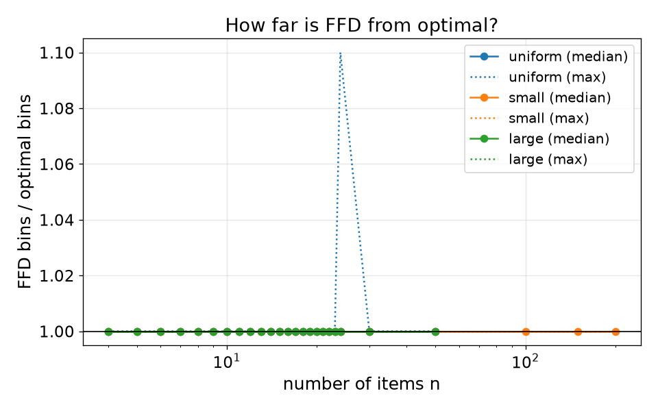
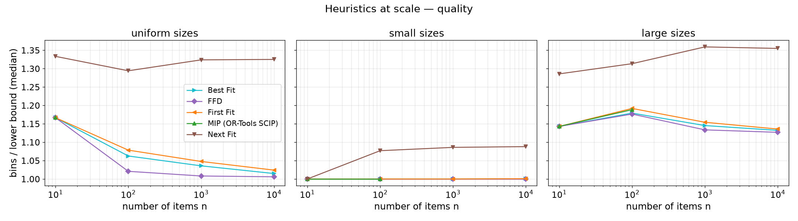
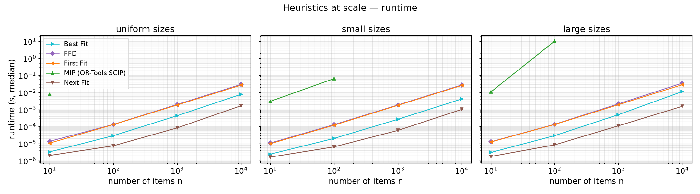
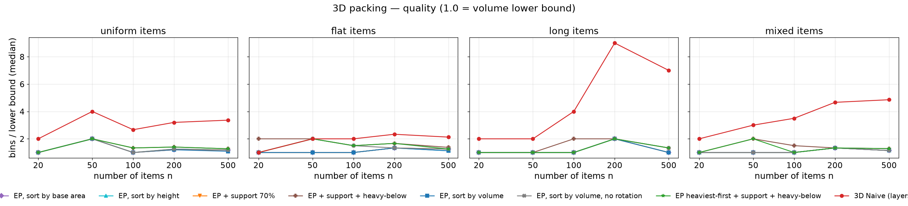
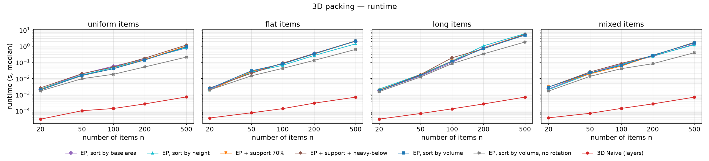
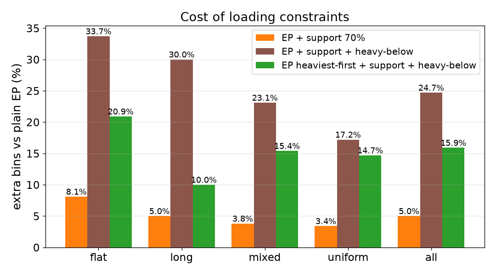
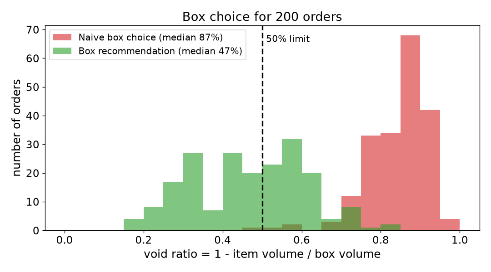

What we compare
Parcel packing asks: how few boxes do we need for these items? We give the same randomly generated items (fixed seeds) to several algorithms and watch how runtime and solution quality split apart as the number of items n grows. We do it three times: 1D (sizes only), 3D (real boxes), and 3D with real loading rules, ending with a practical question — which shipping box should one order use?
| 1D | 3D | |
|---|---|---|
| Naive | Exhaustive search (all n! orders × First Fit), Next Fit | Layer stacking in arrival order, no rotation |
| Better (course) | Bitmask DP, First Fit, Best Fit, FFD | Extreme Point heuristic + sort rules |
| Practical | MIP solver (OR-Tools + SCIP) | Box recommendation from a box catalog |
Every number on this page is generated by
python -m experiments.build_site from the default-mode CSVs (5 reps per setting,
60 s time limit) — the same numbers as summary.md.
1 · Exact answers: where does “try everything” give up?
Question. Three methods always find the optimal number of bins. How large can n get before each one runs out of time? And how close does a fast greedy method (FFD) get?
- Exhaustive search tries every one of the n! item orders and packs each with First Fit. It is optimal because the order “items of bin 1, then bin 2, …” of an optimal packing is one of the orders tried. No pruning — it really tries them all.
- Bitmask DP keeps, for every subset of items, the best (bins used, fill of the last bin). That is 2n states instead of n! orders.
- MIP hands the problem to an industrial solver (SCIP) as an integer program.
- FFD (First Fit Decreasing) sorts items largest first and puts each into the first bin with room. Not guaranteed optimal, but fast.


Result. Exhaustive search gives up at n = 11 in every distribution (n! explodes). The DP reaches n = 24 in every distribution (about 31–33 s) — we stop it there because 224 states already need about half a gigabyte of memory. MIP gives up at n = 100 on uniform sizes and n = 100 on large sizes, but proves the optimum for small items up to n = 200 (the largest n we tried): difficulty depends on the data, not only on n. FFD stays under a millisecond.
| algorithm | dist | largest n, all reps proven optimal | largest n, all reps answered | gave up at n | largest n tried | median runtime at largest answered n (s) |
|---|---|---|---|---|---|---|
| Exhaustive (all orders) | uniform | 10 | 10 | 11 | 11 | 4.5901 |
| Bitmask DP | uniform | 24 | 24 | - | 24 | 33.0787 |
| MIP (OR-Tools SCIP) | uniform | 20 | 50 | 100 | 100 | 58.5147 |
| FFD | uniform | - | 200 | - | 200 | 0.0003 |
| Exhaustive (all orders) | small | 10 | 10 | 11 | 11 | 3.7847 |
| Bitmask DP | small | 24 | 24 | - | 24 | 30.6221 |
| MIP (OR-Tools SCIP) | small | 200 | 200 | - | 200 | 0.3968 |
| FFD | small | - | 200 | - | 200 | 0.0003 |
| Exhaustive (all orders) | large | 10 | 10 | 11 | 11 | 4.893 |
| Bitmask DP | large | 24 | 24 | - | 24 | 31.0634 |
| MIP (OR-Tools SCIP) | large | 22 | 50 | 100 | 100 | 58.3241 |
| FFD | large | - | 200 | - | 200 | 0.0003 |
Cross-check. On 302 instances (n = 4–24) at least two exact methods proved the optimum; they disagreed 0 times. A single disagreement would have stopped the experiment as a bug.


FFD matched the optimum on 99.7% of the instances where the optimum is known; its worst case was 1.1× optimal. The theory only promises ≤ 11/9·OPT + 6/9, so on random items FFD does far better than its worst case — but that is a statement about these distributions.
| dist | instances | FFD optimal | median ratio | worst ratio |
|---|---|---|---|---|
| large | 111 | 100.0% | 1 | 1 |
| small | 130 | 100.0% | 1 | 1 |
| uniform | 110 | 99.1% | 1 | 1.1 |
2 · Greedy at scale: 10,000 items in milliseconds
Question. For large n no exact method finishes. How good are the greedy heuristics, and does a time-limited MIP still help?
- Next Fit keeps one open bin (≤ 2 × optimal). First Fit / Best Fit try all open bins (≤ 1.7 × optimal). FFD sorts first (≤ 11/9 × optimal + 6/9).
- Quality is measured against the lower bound L = ⌈total size ÷ capacity⌉ (no packing can beat it), so 1.00 = provably optimal.
- MIP gets 10 s per run and is not run above n = 1,000 (its model has n × bins variables).




Result. At n = 10,000 FFD needs 1.006× L (uniform), 1.000× L (small), 1.127× L (large), in about 35 ms. Next Fit is clearly worse; First Fit and Best Fit sit in between. The MIP solves small cases, but within 10 s it finds no answer at all from n = 100 on uniform items — so at scale the heuristics win on both time and quality.
Largest n
| dist | algorithm | bins / L | runtime (s) |
|---|---|---|---|
| uniform | Next Fit | 1.325 | 0.001659 |
| uniform | First Fit | 1.0241 | 0.02685 |
| uniform | Best Fit | 1.0148 | 0.007767 |
| uniform | FFD | 1.0059 | 0.029724 |
| small | Next Fit | 1.088 | 0.001012 |
| small | First Fit | 1.0008 | 0.025672 |
| small | Best Fit | 1.0008 | 0.004127 |
| small | FFD | 1 | 0.027445 |
| large | Next Fit | 1.3549 | 0.001537 |
| large | First Fit | 1.1357 | 0.028396 |
| large | Best Fit | 1.1322 | 0.011246 |
| large | FFD | 1.1268 | 0.035181 |
MIP with a 10 s limit
| dist | n | status | bins / L | runtime (s) |
|---|---|---|---|---|
| uniform | 10 | ok | 1.1667 | 0.007542 |
| uniform | 100 | timeout | 10.074613 | |
| small | 10 | ok | 1 | 0.003001 |
| small | 100 | ok | 1 | 0.064589 |
| small | 1000 | timeout | 10.766957 | |
| large | 10 | ok | 1.1429 | 0.010688 |
| large | 100 | feasible,timeout | 1.1884 | 10.129804 |
feasible = answer found but not proven optimal; timeout = no
answer within the limit. Our MIP is the textbook assignment model, which is weak; stronger
formulations (arc-flow, column generation) scale much further.
3 · 3D: real boxes
Question. Items now have width, depth and height. How much does a smarter placement rule save over simply stacking items as they arrive?
- 3D Naive fills a row along x, then a new row behind it, then a new layer on top (as tall as the tallest item in the layer), then a new bin. It never goes back to fill gaps and never rotates items.
- Extreme Point (EP) sorts items (by volume, height or base area) and keeps a list of candidate corners in every open bin. Each item goes to the lowest, back-most corner where it fits, trying all 6 rotations. It goes back to fill gaps.
- Container 100×100×100, item sides 5–50, four item shapes: uniform, flat, long, mixed.


Result. Over all 100 instances, 3D Naive used +202% more bins than EP. Is that just rotation? Running the same EP without rotation costs only +10.3% — so most of the gap is the algorithm (going back to fill gaps), not rotation. The three EP sort rules (volume, height, base area) differ by only 2.5% in total bins.
| compared with EP (rotation on) | dist | instances | bins_ep_volume | bins_variant | extra bins % | instances with more bins |
|---|---|---|---|---|---|---|
| EP, sort by volume, no rotation | flat | 25 | 86 | 102 | 18.6 | 64% |
| EP, sort by volume, no rotation | long | 25 | 40 | 44 | 10 | 16% |
| EP, sort by volume, no rotation | mixed | 25 | 78 | 84 | 7.7 | 24% |
| EP, sort by volume, no rotation | uniform | 25 | 116 | 123 | 6 | 28% |
| EP, sort by volume, no rotation | all | 100 | 320 | 353 | 10.3 | 33% |
| 3D Naive (layers) | flat | 25 | 86 | 156 | 81.4 | 80% |
| 3D Naive (layers) | long | 25 | 40 | 192 | 380 | 92% |
| 3D Naive (layers) | mixed | 25 | 78 | 295 | 278.2 | 96% |
| 3D Naive (layers) | uniform | 25 | 116 | 325 | 180.2 | 96% |
| 3D Naive (layers) | all | 100 | 320 | 968 | 202.5 | 91% |
Largest n = 500
| dist | algorithm | bins | L | bins / L | fill rate | runtime (s) |
|---|---|---|---|---|---|---|
| uniform | 3D Naive (layers) | 37 | 11 | 3.364 | 0.288 | 0.000779 |
| uniform | EP, sort by volume, no rotation | 13 | 11 | 1.182 | 0.822 | 0.246339 |
| uniform | EP, sort by volume | 12 | 11 | 1.091 | 0.883 | 1.156232 |
| uniform | EP, sort by height | 13 | 11 | 1.182 | 0.822 | 0.891095 |
| uniform | EP, sort by base area | 13 | 11 | 1.182 | 0.822 | 0.878147 |
| uniform | EP + support 70% | 13 | 11 | 1.182 | 0.822 | 1.171209 |
| uniform | EP + support + heavy-below | 14 | 11 | 1.273 | 0.774 | 1.232446 |
| uniform | EP heaviest-first + support + heavy-below | 14 | 11 | 1.273 | 0.763 | 1.140229 |
| flat | 3D Naive (layers) | 17 | 8 | 2.125 | 0.418 | 0.000959 |
| flat | EP, sort by volume, no rotation | 10 | 8 | 1.25 | 0.709 | 0.663059 |
| flat | EP, sort by volume | 9 | 8 | 1.125 | 0.788 | 2.225521 |
| flat | EP, sort by height | 9 | 8 | 1.125 | 0.788 | 1.478881 |
| flat | EP, sort by base area | 9 | 8 | 1.25 | 0.763 | 2.175946 |
| flat | EP + support 70% | 10 | 8 | 1.25 | 0.711 | 2.390838 |
| flat | EP + support + heavy-below | 11 | 8 | 1.375 | 0.658 | 2.466672 |
| flat | EP heaviest-first + support + heavy-below | 10 | 8 | 1.25 | 0.711 | 2.251125 |
| long | 3D Naive (layers) | 21 | 3 | 7 | 0.102 | 0.000933 |
| long | EP, sort by volume, no rotation | 4 | 3 | 1.333 | 0.563 | 1.983811 |
| long | EP, sort by volume | 3 | 3 | 1 | 0.719 | 5.326446 |
| long | EP, sort by height | 3 | 3 | 1 | 0.719 | 6.740941 |
| long | EP, sort by base area | 3 | 3 | 1 | 0.719 | 6.193906 |
| long | EP + support 70% | 3 | 3 | 1 | 0.681 | 5.806113 |
| long | EP + support + heavy-below | 4 | 3 | 1.333 | 0.539 | 4.926638 |
| long | EP heaviest-first + support + heavy-below | 4 | 3 | 1.333 | 0.563 | 5.074126 |
| mixed | 3D Naive (layers) | 34 | 7 | 4.857 | 0.198 | 0.000682 |
| mixed | EP, sort by volume, no rotation | 8 | 7 | 1.143 | 0.78 | 0.365381 |
| mixed | EP, sort by volume | 8 | 7 | 1.143 | 0.809 | 1.265697 |
| mixed | EP, sort by height | 8 | 7 | 1.143 | 0.809 | 1.078417 |
| mixed | EP, sort by base area | 8 | 7 | 1.143 | 0.809 | 1.270316 |
| mixed | EP + support 70% | 8 | 7 | 1.143 | 0.8 | 1.504871 |
| mixed | EP + support + heavy-below | 9 | 7 | 1.286 | 0.747 | 1.533889 |
| mixed | EP heaviest-first + support + heavy-below | 9 | 7 | 1.286 | 0.764 | 1.593264 |


4 · From packing to loading: rules cost boxes
Question. Real loading has rules. What does obeying them cost?
- Support: an item above the floor needs at least 70% of its bottom resting on other items — nothing hangs in the air.
- Heavy-below: an item may only rest on items at least as heavy. This is our simplified stand-in for load-bearing limits used in practice (how much weight a box can carry), see Bortfeldt & Wäscher (2013).
- Heaviest first: same two rules, but items are sorted by weight instead of volume, so heavy items take the floor before light ones.


Result. Support alone costs +5.0% bins. Adding heavy-below raises it to +24.7%. Simply loading the heaviest items first, with exactly the same rules, brings it down to +15.9% — lower in every item shape. Support hurts flat items most; heavy-below hurts flat items most.
| rules | dist | instances | bins_ep_volume | bins_variant | extra bins % | instances with more bins |
|---|---|---|---|---|---|---|
| EP + support 70% | flat | 25 | 86 | 93 | 8.1 | 28% |
| EP + support 70% | long | 25 | 40 | 42 | 5 | 8% |
| EP + support 70% | mixed | 25 | 78 | 81 | 3.8 | 12% |
| EP + support 70% | uniform | 25 | 116 | 120 | 3.4 | 16% |
| EP + support 70% | all | 100 | 320 | 336 | 5 | 16% |
| EP + support + heavy-below | flat | 25 | 86 | 115 | 33.7 | 92% |
| EP + support + heavy-below | long | 25 | 40 | 52 | 30 | 48% |
| EP + support + heavy-below | mixed | 25 | 78 | 96 | 23.1 | 72% |
| EP + support + heavy-below | uniform | 25 | 116 | 136 | 17.2 | 72% |
| EP + support + heavy-below | all | 100 | 320 | 399 | 24.7 | 71% |
| EP heaviest-first + support + heavy-below | flat | 25 | 86 | 104 | 20.9 | 72% |
| EP heaviest-first + support + heavy-below | long | 25 | 40 | 44 | 10 | 16% |
| EP heaviest-first + support + heavy-below | mixed | 25 | 78 | 90 | 15.4 | 48% |
| EP heaviest-first + support + heavy-below | uniform | 25 | 116 | 133 | 14.7 | 56% |
| EP heaviest-first + support + heavy-below | all | 100 | 320 | 371 | 15.9 | 48% |
Is 70% a magic number?
No — it is our assumption, so we also ran 50% and 90% on the same instances. The cost grows steadily: +2.5% at 50%, +5.0% at 70%, +8.1% at 90%.
| support threshold | dist | instances | bins_ep_volume | bins_variant | extra bins % | instances with more bins |
|---|---|---|---|---|---|---|
| EP + support 50% | all | 100 | 320 | 328 | 2.5 | 8% |
| EP + support 70% | all | 100 | 320 | 336 | 5 | 16% |
| EP + support 90% | all | 100 | 320 | 346 | 8.1 | 26% |
5 · Practical: which box should this order go in?
Question. An online order of 3–15 items arrives; we have 6 box sizes. Too big a box wastes material — Korean rules on excessive packaging aim for at most 50% empty space.
- Naive box choice: the smallest box with enough total volume, stacked in arrival order without rotation; if it does not fit, try the next box.
- Box recommendation: try boxes from small to large; in each, run EP with all three sort rules and rotation (a “multi-start”); take the first box that holds the whole order.
- Inspired by the idea behind CJ Logistics’ LoIS O’Pack; our items and catalog are synthetic, so our numbers are not comparable with theirs.


Result. The recommendation leaves a median of 47% empty space (naive: 87%) and meets the 50% rule for 55.0% of orders (naive: 0.5%). It takes about 0.5 ms per order including all attempts. The naive rule often fails even in the largest box and has to split the order (27.5% of orders).
| algorithm | orders | median void | mean void | void ≤ 50% | split into >1 box | ms per order | packing attempts |
|---|---|---|---|---|---|---|---|
| Box recommendation | 200 | 0.47 | 0.466 | 55.0% | 0.0% | 0.488 | 2.24 |
| Naive box choice | 200 | 0.867 | 0.843 | 0.5% | 27.5% | 0.071 | 2.84 |
How we measured
- Same instance for every algorithm: items come from a fixed seed per (distribution, n, repetition).
- 5 repetitions per setting; we report medians. Time limit 60 s per run; if any repetition times out, that n counts as “gave up” and larger n are skipped.
- Runtime covers the algorithm call only (
time.perf_counter). Exhaustive search and DP run in a separate process that is killed at the limit. MIP time includes building the model; box recommendation time includes all attempts. - Every answer is checked: each item exactly once, no overflow / overlap / item outside the box, and no rule violations when rules are on.
- All algorithms are pure Python except the MIP solver (C++).
Limitations
- Random, synthetic items; real parcels are more regular.
- Extreme Point is a simplified version of Crainic, Perboli & Tadei (2008).
- No load-bearing strength, centre of gravity, fragility or delivery-order rules.
Code, tests and raw CSVs: https://github.com/JBR-313/A1-bin-packing. Parts of the code and text were written with the help of Claude (Anthropic); the team reviewed everything, and every number here was produced by the code in the repository.